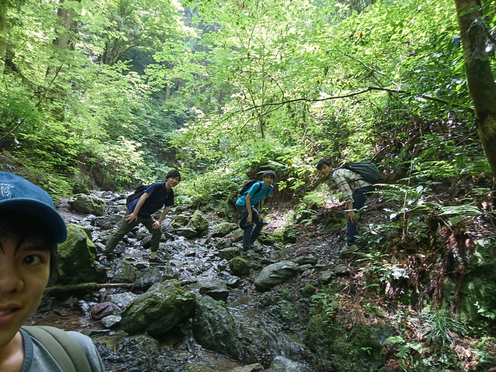
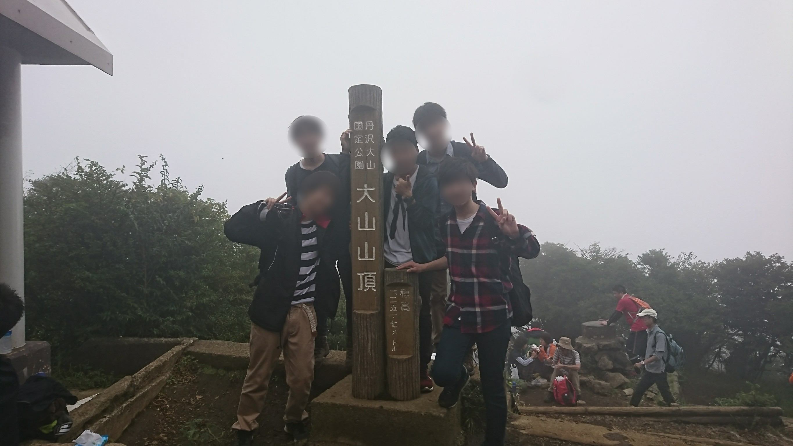
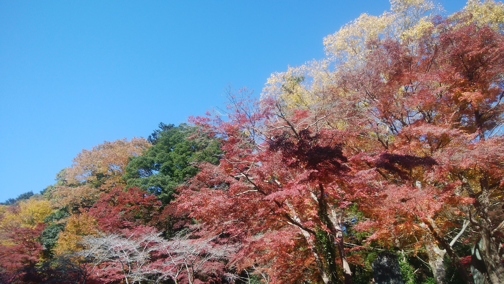
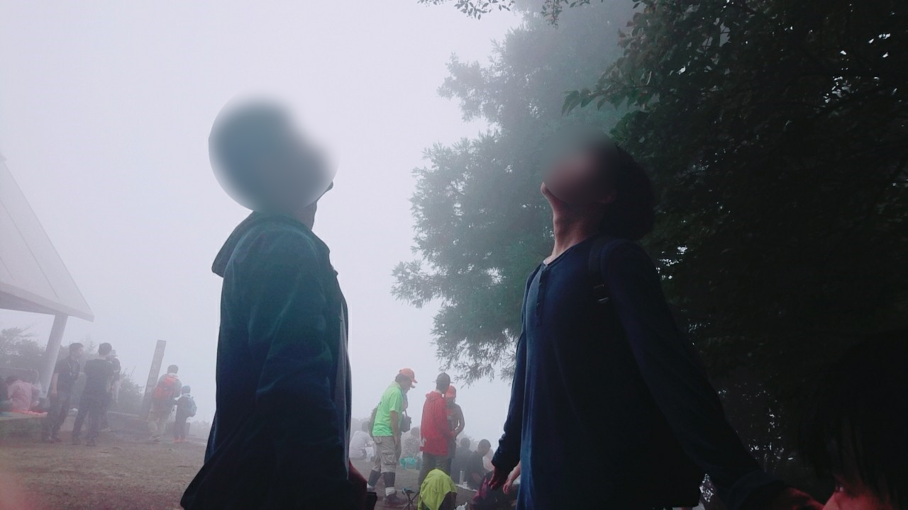
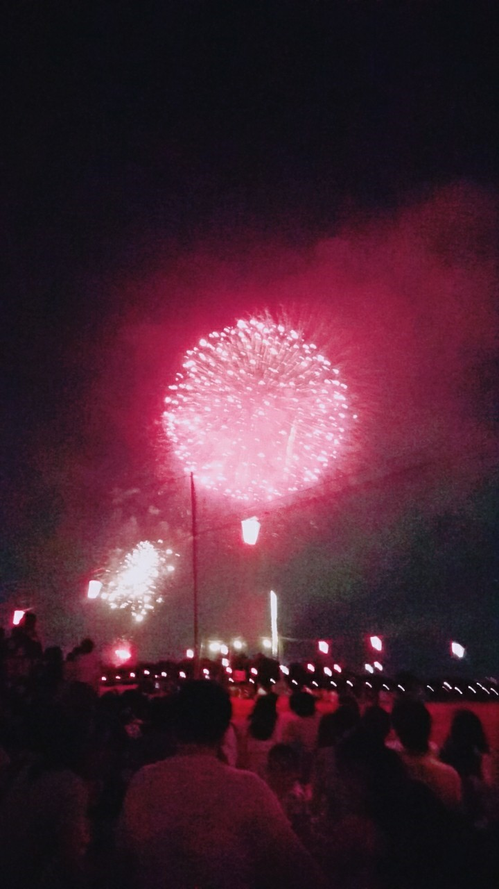
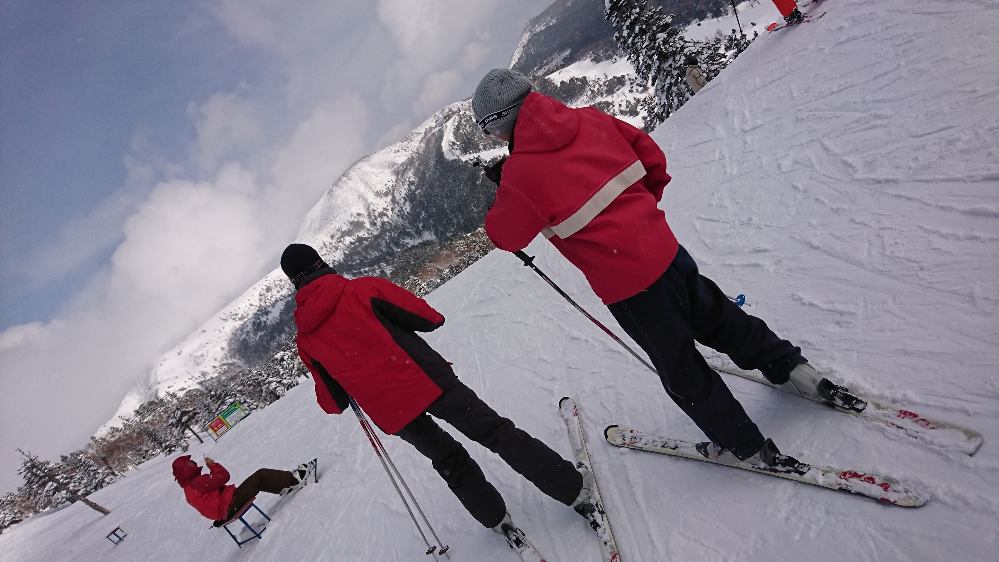

物登とは？
物登（正式名称：早稲田大学物理学科登山クラブ）は、早稲田大学先進理工学部の物理学科・応用物理学科の人が集まって、 登山やその他の活動を通して親睦を深めようという趣旨のサークルです。
2017年夏発足した新しいサークルなので、まだ体制はゆるゆるです。ですのでごゆるりとご参加ください！
全ての活動は参加自由です。ですので、名前は登山クラブですが、登山に参加しなくてもおーけーです！
幽霊部員でさえも募集しています！
活動概要
登山
物登のメインの活動です。週末や長期休みを使って主に関東近郊の山へ出かけます。最終目的は富士山を麓から徒歩で登りきること！…ですが、 物理学科の仲間たちは運動不足ですので、まだ軽めの登山が多いです。

こんな大自然の中を進んでいきます。

高尾山の山頂での一枚。物登の活動はここから始まりました。

神奈川県の大山にも行きました。高尾山よりハードな登山でした。

秋の活動では紅葉を見ることができます。数式の美しさとはまた違った美しさを堪能しましょう。

運が良ければインスタ映えも狙えます。

登山後に更に活動することもあります。この日は登山後に花火大会に行ってきました。登山後の花火は身に沁みます。
スキー
冬の登山は非常に厳しいため、冬季は登山を行いません。 そんな冬の間も楽しめる活動として、スキーに行きます。 未経験者も多いので、ゆるーく楽しむことができました。

自主英語物理ゼミ
登山以外にも物登の活動はあります。皆さんの多くはこれから物理学を使った職に就くことになると思います。国際化が叫ばれる今、もちろん英語を使って活動することが多くなると思うのですが、ここで一つ質問です。 あなたは高校で習った物理もしくは数学の知識を英語で説明することができますか？きっと難しいのではないでしょうか。物登では、英語で物理に関する内容を発表し、その内容について英語で会話をするというゼミを不定期で行っています。
あなたの英語力を物理、数学にも結び付けるチャンスです！ぜひご参加ください。

内容は簡単に。目的はあくまで物理学のtechnical termを習得することです！
自主物理ゼミ
授業どおりに学んでいては周りと同じ世界でしか生きられません。せっかくなので自主的に早くいろいろな分野を習得しましょう。 物登ではゼミで解析力学、電磁気学、相対論、量子論、フーリエ解析、複素関数論などの分野を先取りしたゼミを行います。

その他
物登に入るとほかにもいいことがあります。まず先輩が全員物理学科か応用物理学科なので、授業に関する情報が容易に手に入ります。 テスト時に有利になること間違いなしです。そして、学科の縦のつながりを得ることができます。縦のつながりを手に入れるのは容易ではありませんが、 学科に特化した物登なら簡単に得られます。
入会について
入会費、年会費ともに無料です。活動の参加費などは自費ですが、それ以外の費用が請求されることは一切ありません。 また、全ての活動は参加自由なので、幽霊部員でも大歓迎です。ゼミには参加するけど登山にはいかないというような形態でもおっけーです。 奮ってご参加ください。
また、メンバーの25%が女性なので、女性の方も安心して入会してみてください！
入会方法
新歓説明会にご参加ください。新歓説明会の日程は後日決めますので、 Twitter @waseda_buttoをフォローして確認をお願いします。